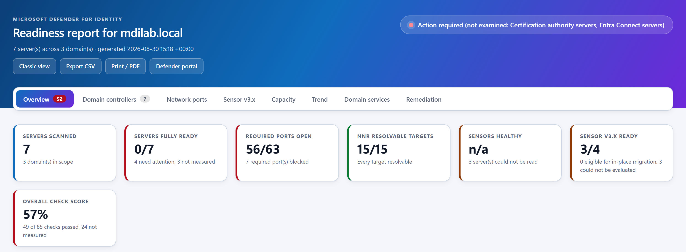
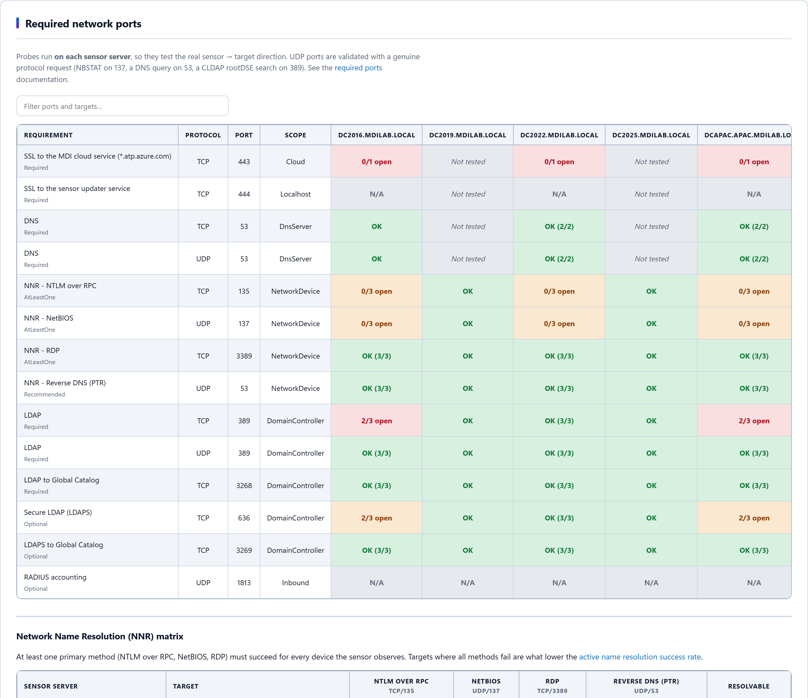
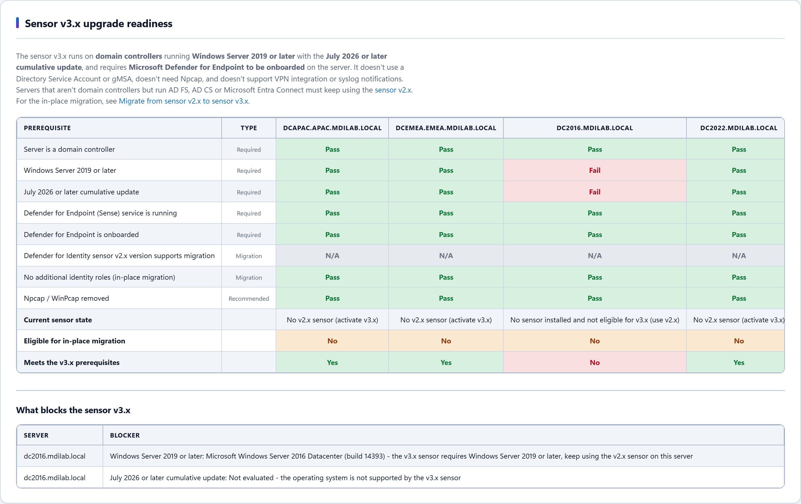

A single self-contained PowerShell script — no modules, no dependencies, no installation. Copy one file to a domain-joined machine and run it. The HTML report it produces is self-contained too, so it opens on an isolated domain controller with no internet access.
.\Test-MdiReadiness.ps1 -Forest -OpenHtmlReport
Why it exists
Microsoft's original script answers “is this environment ready?” with ready or not ready. The problem is the third case, which happens constantly on a real network: the script could not read the answer.
No RSAT. ADWS filtered. Remote registry denied across a trust. WMI unreachable. In those cases a prerequisite has not passed and has not failed — nobody looked.
Every release of this build has pushed on that one point: a value the script could not read must never come back looking like a measurement. An unread check does not sit in the failed column, it is not quietly counted as a pass, and it stops the run from claiming READY. The report says “not measured” and explains why.
That matters most in the case you would never catch by eye: a scan that reads almost nothing still prints a confident verdict — and the confident verdict is the one people forward to a customer.
Compared with the original script
| Original | Extended build v1.2.0 | |
|---|---|---|
| Parameters | 8 | 30 |
| Functions | 24 | 197 |
| Lines of code | 1,092 | 21,252 |
| Regression tests | none | 341 files / 11,290 assertions |
| Forest-wide scanning | no | yes |
| Network port validation | no | 11 requirements, probed per sensor |
| NNR troubleshooting matrix | no | yes |
| Sensor v3.x upgrade readiness | no | 8 prerequisites per server |
| Capacity planning | no | yes |
| Remediation script | no | generated every run |
| Trend tracking | no | on by default |
| Pipeline / CI gate | no | yes, with distinct exit codes |
What it checks
Required network ports
All 11 documented sensor requirements, probed from each sensor server, so it tests the real sensor → target direction rather than the reverse. UDP ports are validated with a genuine protocol request — an NBSTAT node status request on 137, a DNS query on 53 and a CLDAP rootDSE search on 389 — because a UDP “connect” alone proves nothing.
Network Name Resolution (NNR)
A matrix showing, per sensor and per target, which of the four name-resolution methods succeeded. This is what you need when a tenant reports the Low success rate of active name resolution health alert.
Sensor v3.x upgrade readiness
The eight v3.x prerequisites and in-place migration eligibility for every server, with the exact blocker named for each one.
Capacity planning
Samples the packet rate of every domain controller concurrently and maps it to the published sizing table. Short samples are labelled estimates rather than presented as verdicts.
And also
Sensor service health, clock skew across sensor servers, Deleted Objects container permissions, and probe latency — so you can tell a blocked port from one that is reachable but slow.
The report
A single self-contained HTML file: tabbed, each tab deep-linkable and filterable, CSV export per tab, a print stylesheet that expands everything for PDF, and a layout that adapts from ultrawide down to phone width. A Classic view button returns the original single-page layout for anyone who prefers the report they already know.



Running it as a compliance gate
-FailOnIssues exits with the issue count and -AsJson emits the whole
report object. Exit code 255 means the scan never ran and is kept
deliberately distinct from the scan found problems, so a scheduled job cannot read a
scan that looked at nothing as a pass.
.\Test-MdiReadiness.ps1 -Forest -FailOnIssues
if ($LASTEXITCODE -eq 255) { throw "MDI readiness scan could not enumerate any domain controller" }
if ($LASTEXITCODE -ne 0) { throw "MDI readiness regressed ($LASTEXITCODE issue(s))" }
How it is tested
Every fix ships with a regression test, and the whole suite runs before anything is released: 341 test files, 11,290 assertions, 0 failures. On top of that, each release is verified end to end on a live multi-domain lab — staged to a member server by SHA256 and run as a domain account through a scheduled task — because a green unit suite says nothing about whether a real identity can log on, reach the directory and produce a report.
Test-MdiReadiness.ps1.
It is not endorsed or supported by Microsoft and is not covered by any Microsoft support
agreement — do not open Microsoft support cases about it. For the official, supported
tool use the
upstream repository.
Provided “as is”, with no warranty and no liability of any kind. It reads
configuration from your domain controllers and opens network connections to them: review the
code, test it in a non-production environment first, and verify its findings against the
current
official documentation
before acting on them. Original work Copyright (c) Microsoft Corporation, used under the
upstream repository's MIT licence.